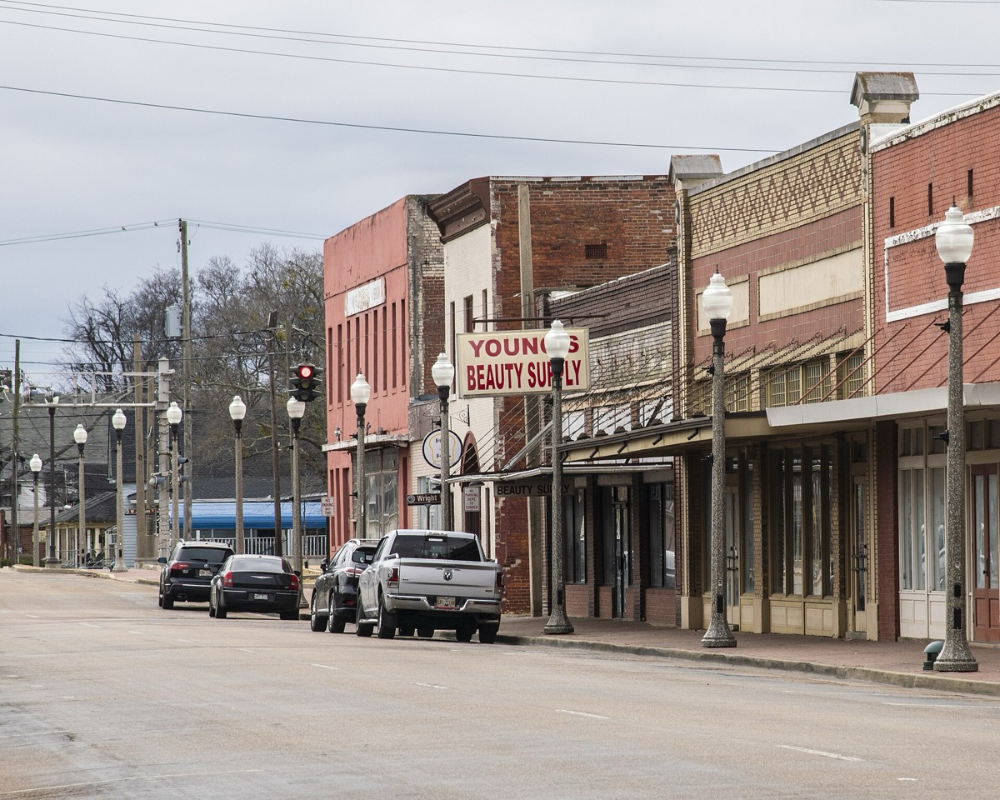

A
Energy Workforce
- Start with
- Paid placements into Wanzek’s apprenticeship, then the plant’s operations jobs.
- To answer together
- Hiring by trade and month; how many slots for county residents.

Local workers, kitchens and suppliers ready to win the work, and still working when the build is done.
A discussion draft from a landowner family. We’re asking for one meeting and two introductions. Not money, not a paid role, and no change to any lease or project term. If Entergy already does this, we join it.
The plant is Entergy’s. The question for Jefferson County is what its people and firms can do once the build is over that they couldn’t do before.
Return on capital and operations: Entergy’s year-by-year revenue requirement, filed with the Arkansas Public Service Commission (Docket 25-054-U, Oct 2026), 2026–2058. Every row marked ~ or with a range is our estimate. Rows overlap; they don’t sum.
Most of the value goes where it always goes: to capital and to equipment made elsewhere. The part a county can grow is the work in the middle.
Kitchens that can feed a crew. Haulers that pass a safety check. Residents with a credential and a placement. Each one is a capability, and it is still there for the next plant.
The build is under way. What the county can do afterward is decided while it’s being built.
Crews arrive from out of state.
HiringThe contractor names what it needs, trade by trade, and county residents are ready to apply.
Meals, lodging, hauling and materials come from vendors with no tie to the county.
BuyingCounty firms are already checked against the requirements when a package opens.
Local firms don’t know what’s open, or can’t meet the insurance minimum.
QualifyingThe gaps are closed first: insurance, safety records, certificates, working capital.
Training happens with no job at the end.
TrainingTraining starts only with a committed, paid placement.
The build ends, and the money leaves with the crews.
The endFirms and workers keep a record that wins the next contract. ↺
The utility owns and runs the plant. Local businesses supply and serve it. Regional schools train for it. Families decide for themselves what to do with income from their land.
One conversation to start, thirty minutes every two weeks, and a short list whenever a package opens. Here is what Entergy and Wanzek would actually see, step by step. It is the same system Facework runs with creators and institutions.
Write the brief from one 45-minute conversation.
You doCorrect it. That’s all.
| Firm or cohort | Work | Insurance | Safety | Avetta | Status |
|---|---|---|---|---|---|
| Kitchen A | Crew meals | Meets | Meets | Done | Ready |
| Hauler B | Gravel, hauling | Meets | EMR 1.2 | Done | Closing the gap |
| Fence Co. C | Perimeter fencing | Meets | Meets | Started | This week |
| Apprentice cohort, 12 | Craft laborers | n/a | OSHA-10 | n/a | Ready to apply |
Check every county firm and resident against your requirements before you need them.
You doNothing yet. The list is ready when you are.
Three county firms are ready to bid through your process. No recommendation, no guarantee: the choice is yours.
Tell ready firms the package is open, the day it opens.
You doRun your normal bid. Decide.
Kitchen A started serving the civil crew. 6 residents hired as apprentices.
Hauler B’s safety plan filed. Lodging list for the traveling crew.
The fencing schedule for Area 4.
Bring a one-screen update and one question.
You doAnswer the question.
Count what stayed, in one page, before anything is published.
You doReview it, and use it.
Hand it all over.
You getA county that is ready for the next one.
Example: firm names and numbers are made up. Real requirements come from Wanzek, MasTec and Entergy.




Sized to Arkansas Cypress alone: 700 to 800 workers at peak, by Entergy’s filing. The biggest unknown is whether Wanzek pays crews a per diem or feeds them, so start from a scenario.
Every input is our assumption, to confirm with Wanzek. On per diem, perhaps one worker in five buys lunch on site; when a contractor caters, every worker eats. A month is about 21.7 working days. The peak is roughly 9 to 15 months of a two-and-a-half-year build.
Even the smallest scenario is a year of steady work for a county kitchen, and a reference that wins the next contract.
Every paid job makes the next one easier to win.
The goal is to move county firms and workers from the low end of what they capture today toward the high end. Here is where that money would come from, workstream by workstream, over the build.
county residents hired onto the build, about one in eight of its 700–800 jobs. At $5,000–$8,000 a month for about 18 months, that is roughly $12M in wages. A dozen carry into the plant’s permanent jobs and the next build.
county kitchens and lodging partners feeding and housing crews: $1–4M in meals from the food model, plus crew nights in county hotels. About $5M together.
firms on the ready list, 15–25 contracts brokered in fencing, clearing and seeding, gravel and roads, hauling, erosion control, sanitation and security. Site work and services are roughly $285M of the build; county firms winning about 30% of them is about $85M.
families with a written plan for their land and income. Not counted in dollars: the decisions stay with the families.
clinics, shelters or churches with backup power through an outage, funded separately with public and philanthropic partners.
These are our targets, built from Entergy’s job and pay figures, the food model, and federal cost benchmarks for site work. They are a starting point to test with Wanzek and Entergy, not commitments.
Jobs, contracts and plans, counted. That is what the +$100M is made of.
This adds no work to anyone’s table. The partnership does the legwork in between, and every decision stays where it is today.
Keeps doing
Owning and running the plant; registering suppliers.
We take off the plate
Finding and readying local firms, and reporting what stayed.
Keeps doing
Every hiring and buying decision.
We take off the plate
A short list of county firms and residents already checked against its requirements.
Keeps doing
Their programs and standards.
We take off the plate
Matching students to committed, paid placements.
Keeps doing
Their own work, bids and prices.
We take off the plate
Knowing what’s open, and closing the gaps to bid.
Keeps doing
Every decision about their land and income.
We take off the plate
Finding planning help and independent advice.
Does
The legwork, the records and a plain quarterly report.
Never takes
A paid role in Phase 1, or any decision that belongs to someone else.
Today a build is counted by what it announces. The gap tells us what else to count.
Counted todayJobs announced: 700–800 for the build, 15 permanent
Count insteadResidents still in the trade a year later
Not tracked. In Mississippi County’s steel mills, about half the workers live outside the county.
Counted todayDollars invested: $1.6 billion
Count insteadShare of the build spent with county firms
Our estimate: 8–15%. Big River Steel promised 20% to Arkansas firms.
Counted todayContracts awarded: not reported by county
Count insteadCounty firms with a repeat contract within two years
New. Starts at zero.
Counted todayLease payments made on schedule
Count insteadFamilies with a written plan for their land
New. Voluntary and self-reported.
Counted todayPlant completed: end of 2028
Count insteadCritical facilities with power through an outage
New. Mapped in Phase 1.
It starts with what the project needs now, and grows only where partners see value.
Meet Entergy’s teams and the contractor. Confirm needs and open opportunities. Name the firms and residents who could be ready.
What remainsA list of ready firms and committed placements
Food and hospitality first, then suppliers and workforce, with budgets and measures agreed first.
What remainsCounty firms with repeat contracts
Add the landowner program and resilience. Bring in public and philanthropic funders.
What remainsResidents still in the trade; families with a plan
Write down what worked, for other Delta communities hosting new infrastructure.
What remainsCritical facilities with power through an outage
Stedmon Harper · harper@face.works
The immediate goal is modest. The ambition is that the Delta prospers alongside the infrastructure it hosts.
We’re the Monson family. Our family holds land in the Arkansas Cypress project in Jefferson County. My mother, Reneta Harper, worked 30 years at Entergy Arkansas and retired from there. We know the company, and we know the place.
Delta Futurism is how we’re putting that to work. I’m Stedmon Harper, and I would coordinate Phase 1 without pay. We don’t speak for other landowners or the wider community. We’re asking to be useful while the build is here.